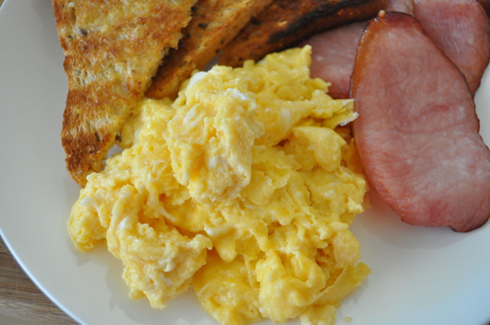

Cheesy Scrambled Eggs

My father taught me this one. It's American, I think? Original post
Ingredients:
- 1-6 Egg (depending on your preference)
- 2 slices Cheddar Cheese
- 1 T Butter
Instructions:
- Slice the cheese into tiny squares.
- Crack the eggs into a bowl and mash them up with a fork.
- (Be sure to wash the fork to prevent raw egg poisoning.)
Put the butter on a pan on a stove-top set on high.
- Let it melt and move it around until it covers the entire pan.
- Pour the cheese and the eggs into the pan, and using a fork or something else,
spread the eggs around, never letting them stay in one space too long.
- Take the eggs out when you desire according to whether you like them hard or soft.
- Enjoy.